1 Das Wichtigste in Kürze
- Alle roten Knöpfe muss man halten, nicht antippen – etwa eine Sekunde, bis der Balken durchgelaufen ist. So löst nichts versehentlich aus.
- Bei unmittelbarer Gefahr gilt zuerst der Notruf: 118 Feuerwehr, 144 Sanität, 117 Polizei. Die App ersetzt ihn nicht, sie hilft beim Melden.
- Jede angemeldete Person darf alarmieren. Sie brauchen keine Erlaubnis und müssen niemanden fragen.
- Die App funktioniert auch ohne Empfang. Alle Handlungsanweisungen sind auf dem Gerät gespeichert.
Im Zweifel auslösen
Ein Alarm zu viel ist harmlos. Ein Alarm zu wenig kann Leben kosten. Niemand wird für einen Fehlalarm zur Rechenschaft gezogen.
2 Anmelden
Sie melden sich mit Ihrer geschäftlichen E-Mail-Adresse und dem Passwort an, das Sie von der Schulleitung erhalten haben. Der Umschalter oben muss auf Live stehen.
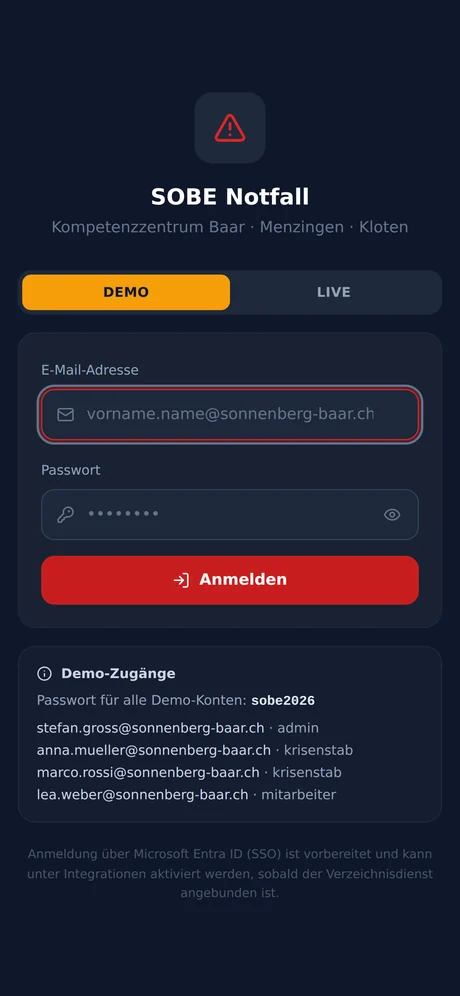
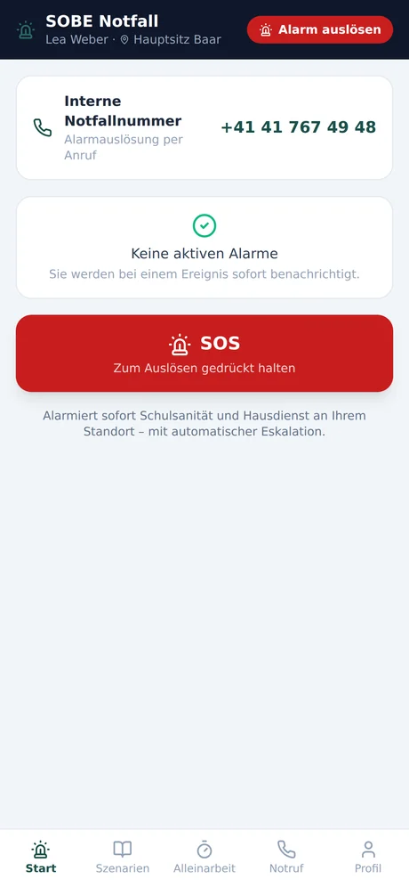
Beim ersten Mal werden Sie aufgefordert, ein eigenes Passwort zu vergeben: mindestens acht Zeichen mit mindestens einer Ziffer. Danach bleiben Sie angemeldet – Sie müssen sich nicht bei jedem Dienst neu anmelden.
Beim ersten Start
Das Telefon fragt, ob die App Mitteilungen senden darf. Bestätigen Sie das. Ohne diese Erlaubnis erreichen Sie keine Alarme.
3 Die Startseite
Unten führen fünf Schaltflächen durch die App. Sie sind immer erreichbar, egal wo Sie gerade sind.
| Bereich | Wofür |
|---|---|
| Start | Laufende Alarme und der SOS-Knopf |
| Szenarien | Handlungsanweisungen zum Nachschlagen |
| Alleinarbeit | Der Timer, wenn Sie allein unterwegs sind |
| Notruf | Alle Notrufnummern zum direkten Anrufen |
| Profil | Ihre Angaben, Passwort ändern, abmelden |
4 SOS – Hilfe für sich selbst
Der grosse rote Knopf auf der Startseite ist für den Fall gedacht, dass Sie Hilfe brauchen und keine Zeit haben, ein Szenario zu suchen.
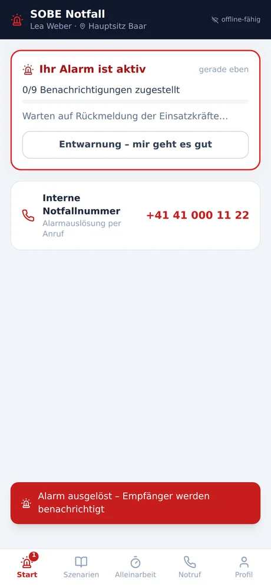
SOS alarmiert sofort Schulsanität und Hausdienst an Ihrem Standort. Antwortet niemand, weitet das System die Alarmierung selbständig aus.
Fehlalarm ausgelöst?
Melden Sie sich kurz beim Krisenstab oder der Schulleitung – nur diese können einen Alarm beenden. Der Knopf Entwarnung – mir geht es gut wird Ihnen zwar angezeigt, ist aber der Führung vorbehalten und wird abgewiesen. Ein Anruf genügt, und niemand nimmt Ihnen den Irrtum übel.
5 Einen Alarm erhalten
Wird an Ihrem Standort alarmiert, erscheint die Meldung zuoberst auf der Startseite. Ist der Alarm nicht still, ist er auch bei stummgeschaltetem Telefon hörbar.
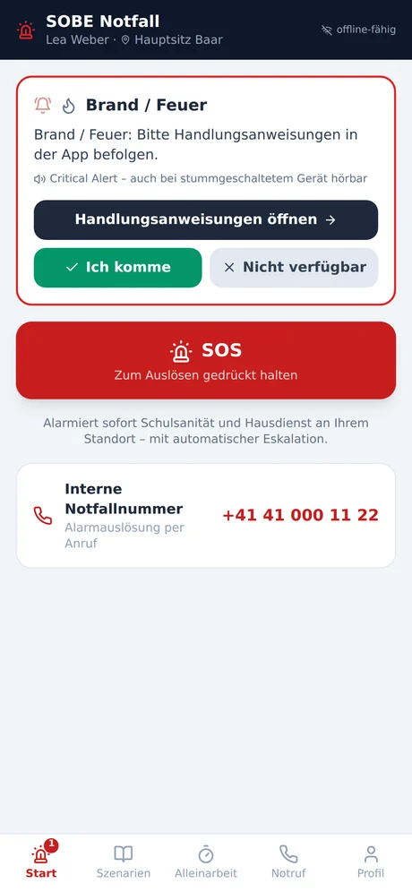
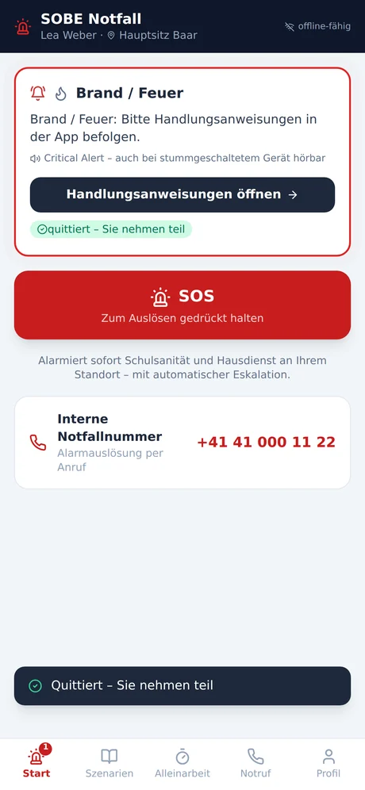
- Antworten. Ich komme oder Nicht verfügbar. Beides ist eine gültige Antwort – wer im Wasser steht oder ein Kind betreut, meldet sich als nicht verfügbar.
- Anweisungen öffnen. Der dunkle Knopf führt in den Ablauf zum Ereignis.
Bitte immer antworten
Wer nicht antwortet, gilt als nicht erreicht. Dann alarmiert das System nach wenigen Minuten weitere Personen – unnötig, wenn Sie längst unterwegs sind.
6 Der geführte Ablauf
Jedes Szenario führt in vier Phasen durch das Ereignis. Sie tippen sich mit Weiter durch – die Reihenfolge ist die Reihenfolge, in der gehandelt wird.
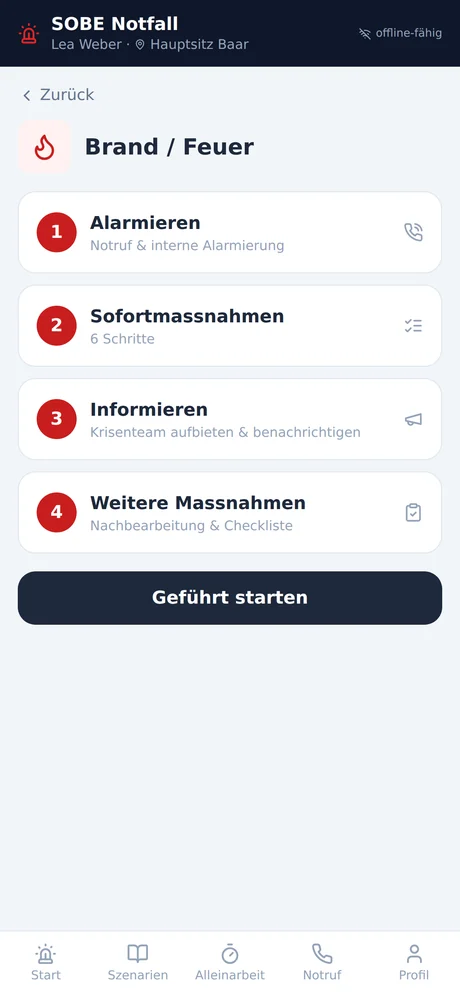
Phase 1 · Alarmieren
Zuerst Hilfe holen. Der gelbe Kasten sagt, wann ein Notruf nötig ist und was Sie am Telefon melden. Darunter wählen die roten Knöpfe die Nummer direkt, und ganz unten alarmieren Sie die Kolleginnen und Kollegen im Haus.
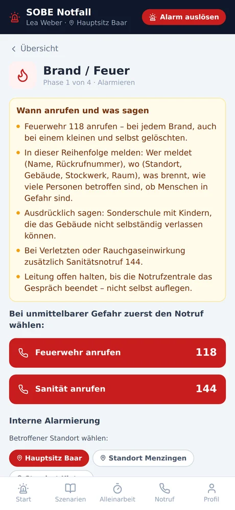
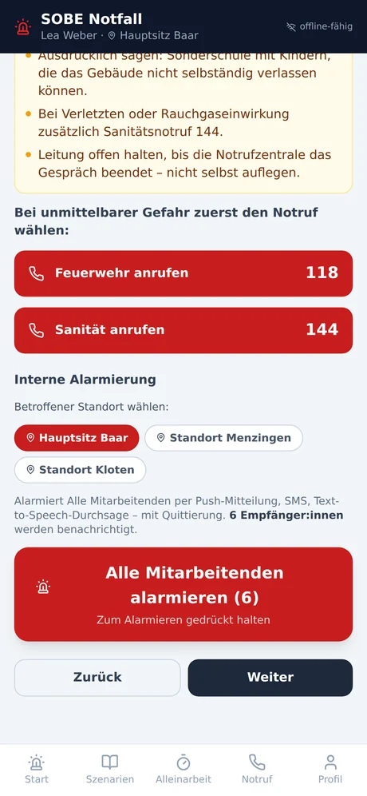
Phase 2 · Sofortmassnahmen
Jetzt die Handgriffe, der Reihe nach. Tippen Sie einen Schritt an, wenn er erledigt ist – so verlieren Sie unter Druck nicht den Faden.
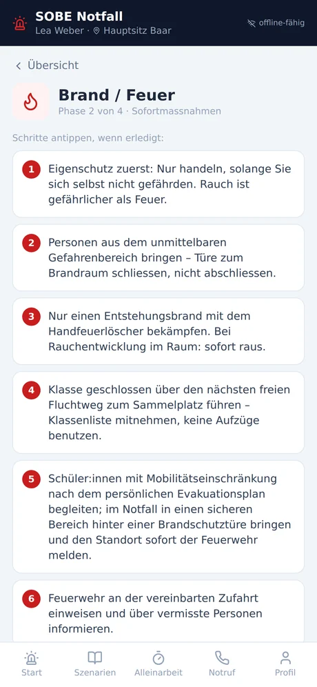
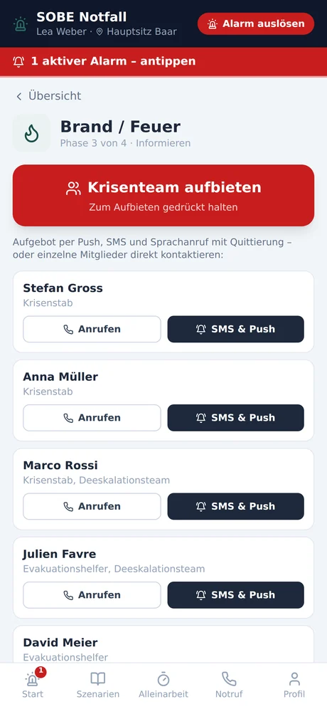
Phase 3 · Informieren
Reicht die eigene Kraft nicht, bieten Sie hier das Krisenteam auf. Einzelne Personen erreichen Sie über Anrufen oder SMS & Push.
Phase 4 · Weitere Massnahmen
Alles nach der Akutphase: informieren, betreuen, dokumentieren. Darunter eine Checkliste zum Abhaken und – aufklappbar – die Rechtsgrundlagen, auf denen das Vorgehen beruht.
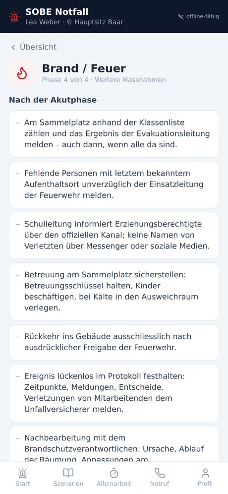
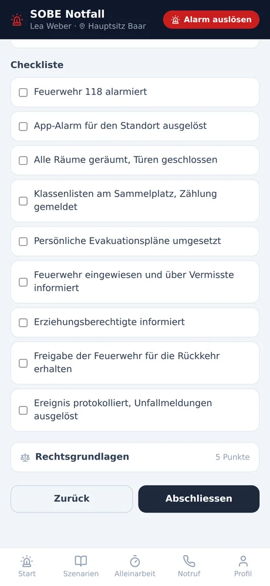
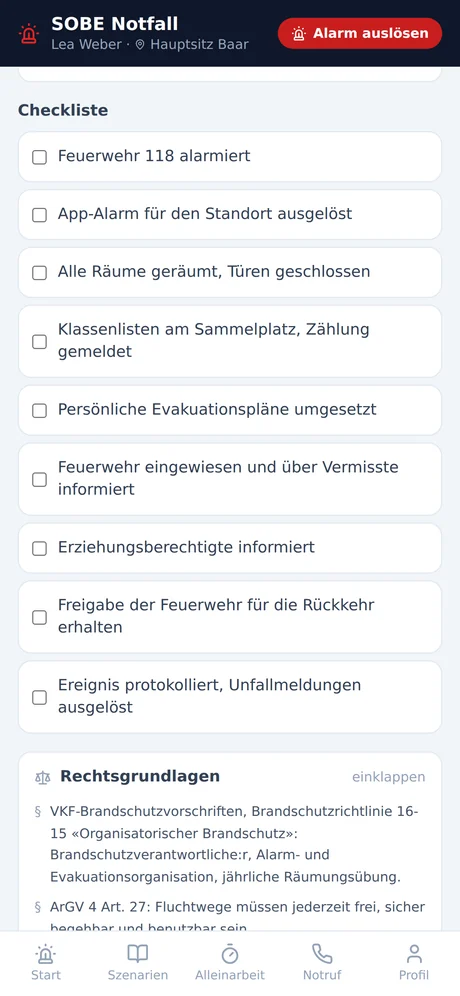
7 Szenarien nachschlagen
Unter Szenarien finden Sie alle Abläufe – auch ohne Alarm. Nutzen Sie das zur Vorbereitung: Wer den Ablauf einmal in Ruhe gelesen hat, findet sich im Ernstfall schneller zurecht.
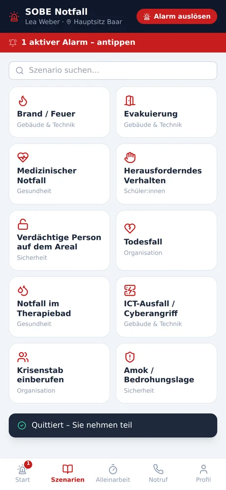
8 Allein arbeiten
Sind Sie allein unterwegs – Abendrundgang, Wartung, Therapie im abgelegenen Trakt – starten Sie einen Timer. Melden Sie sich nicht vor Ablauf zurück, alarmiert die App selbständig Schulsanität und Hausdienst.
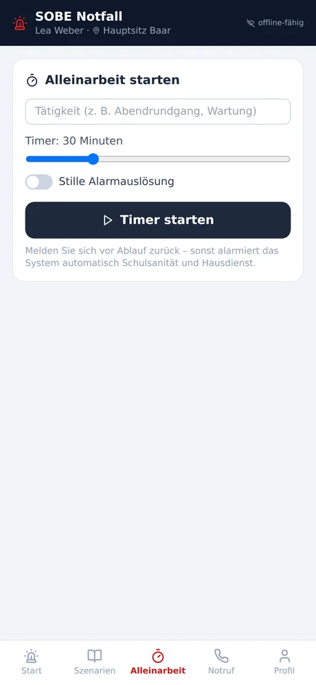
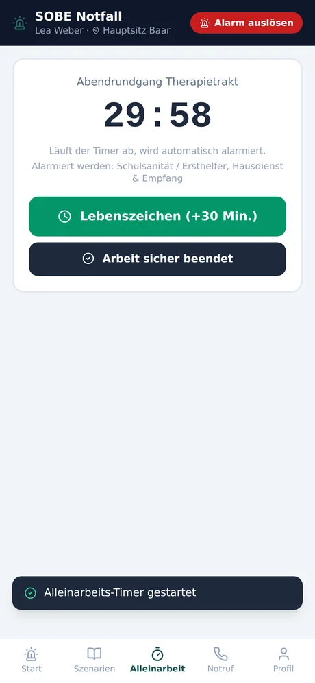
- Tätigkeit eintragen – sie steht später im Alarm und sagt den Helfenden, wo sie suchen müssen.
- Dauer wählen. Lieber etwas kürzer: Verlängern geht jederzeit.
- Timer starten.
- Zurück melden, sobald Sie fertig sind. Das ist der wichtigste Schritt.
Bitte nicht vergessen
Ein vergessener Timer löst einen echten Alarm aus, und Kolleginnen und Kollegen machen sich unnötig auf den Weg. Melden Sie sich zurück, sobald Sie wieder in Gesellschaft sind.
9 Notrufnummern
Alle wichtigen Nummern an einem Ort. Antippen ruft direkt an – das funktioniert auch, wenn sonst nichts mehr geht.
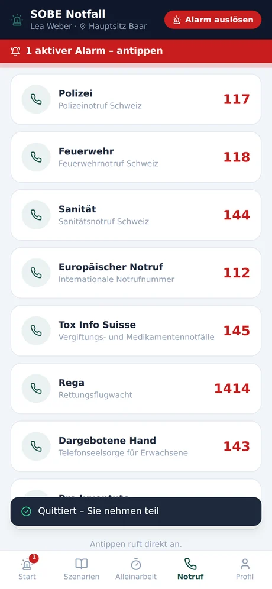
10 Ihr Profil
Hier stehen Ihr Standort und Ihre Gruppen – sie entscheiden, welche Alarme Sie erreichen. Stimmt etwas nicht, melden Sie es der Schulleitung; ändern lässt es sich nur dort.
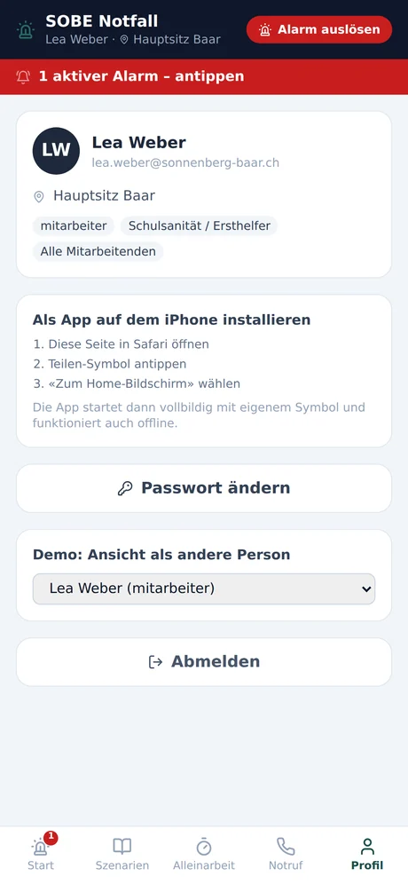
11 Häufige Fragen
Ich kann mich nicht anmelden, obwohl alles stimmt.
Prüfen Sie den Umschalter oben: Er muss auf Live stehen. Demo ist ein Übungsbestand mit erfundenen Personen – Ihr Konto gibt es dort nicht.
Ich komme nicht ins Webportal.
Das ist richtig so. Das Portal ist der Schulleitung und dem Krisenstab vorbehalten. Für Mitarbeitende ist die App gedacht – sie enthält alles, was Sie brauchen.
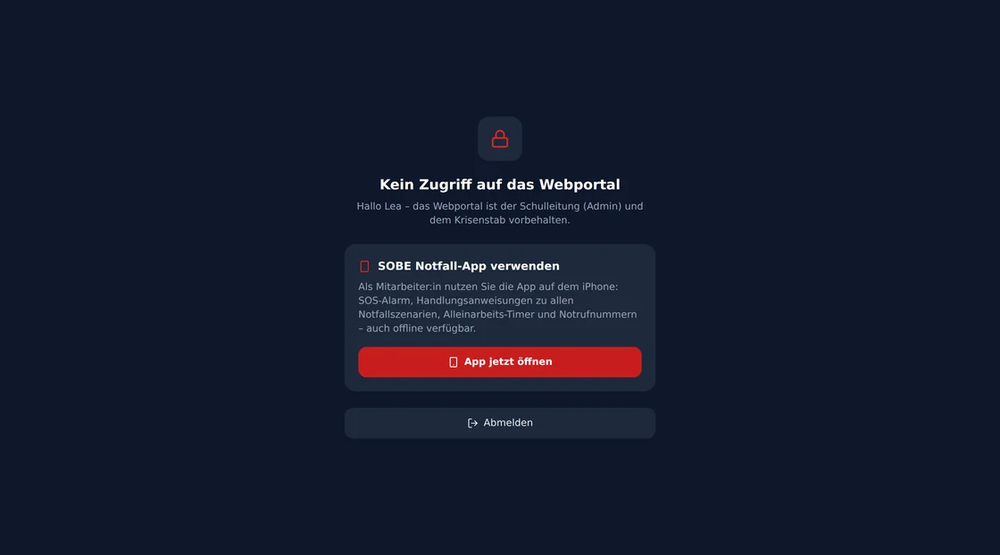
Ich habe mein Passwort vergessen.
Die Schulleitung setzt ein neues. Ein Zurücksetzen per E-Mail gibt es bewusst nicht.
Ich höre die Alarme nicht.
Prüfen Sie in den iPhone-Einstellungen unter Mitteilungen › SOBE Notfall, ob Mitteilungen erlaubt sind. Stille Alarme sind dagegen mit Absicht lautlos: Bei einer verdächtigen Person oder herausforderndem Verhalten schadet ein Ton.
Funktioniert die App ohne Empfang?
Alle Handlungsanweisungen sind auf dem Gerät gespeichert und jederzeit lesbar. Zum Alarmieren braucht es allerdings eine Verbindung – nutzen Sie dann die Notrufnummern, die über das Mobilnetz auch ohne Datenverbindung erreichbar sind.
Darf ich wirklich selbst alarmieren?
Ja. Jede angemeldete Person darf das, ohne Rückfrage. Im Zweifel lieber auslösen.